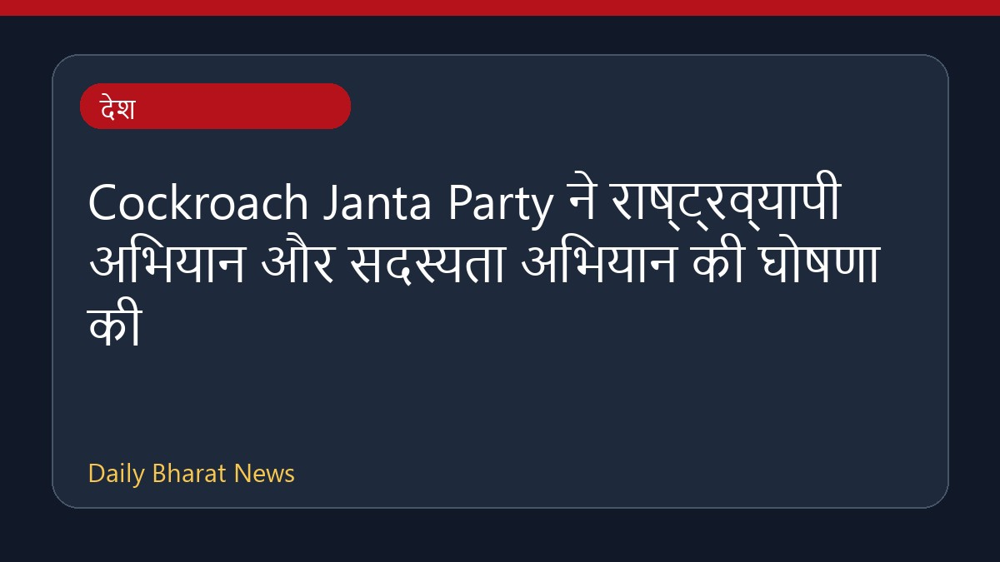

Cockroach Janta Party ने राष्ट्रव्यापी अभियान और सदस्यता अभियान की घोषणा की

कॉकroach जनता पार्टी ने एक राष्ट्रव्यापी सदस्यता अभियान, सार्वजनिक संवाद और विस्तार योजना का ऐलान किया है। पार्टी सितंबर से 'क्या बोलती पब्लिक' अभियान शुरू करेगी, जिसका उद्देश्य बेरोजगारी को एक बड़ा राष्ट्रीय मुद्दा बनाना है। इसके अलावा, पार्टी ने अपनी पहुँच को मजबूत करने और झारखंड में विरोध प्रदर्शनों का समर्थन करने के लिए एक राष्ट्रीय कार्यसमिति का गठन भी किया है। इस संबंध में विभिन्न मीडिया रिपोर्ट्स में व्यापक जानकारी साझा की गई है।
मूल स्रोत: India News Sources
CJP announces membership drive, public dialogue, expansion plan, national working committee - The Hindu ↗
CJP announces membership drive, public dialogue, expansion plan, national working committee - The Hindu ↗